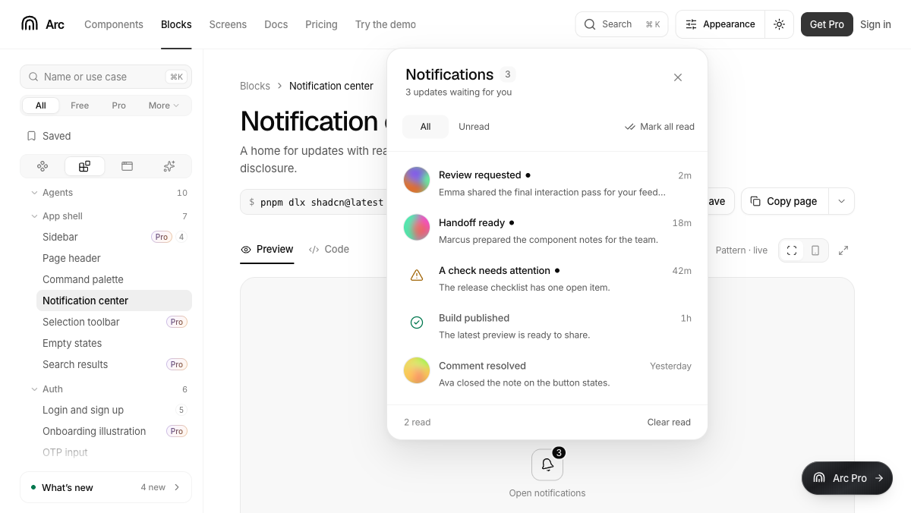
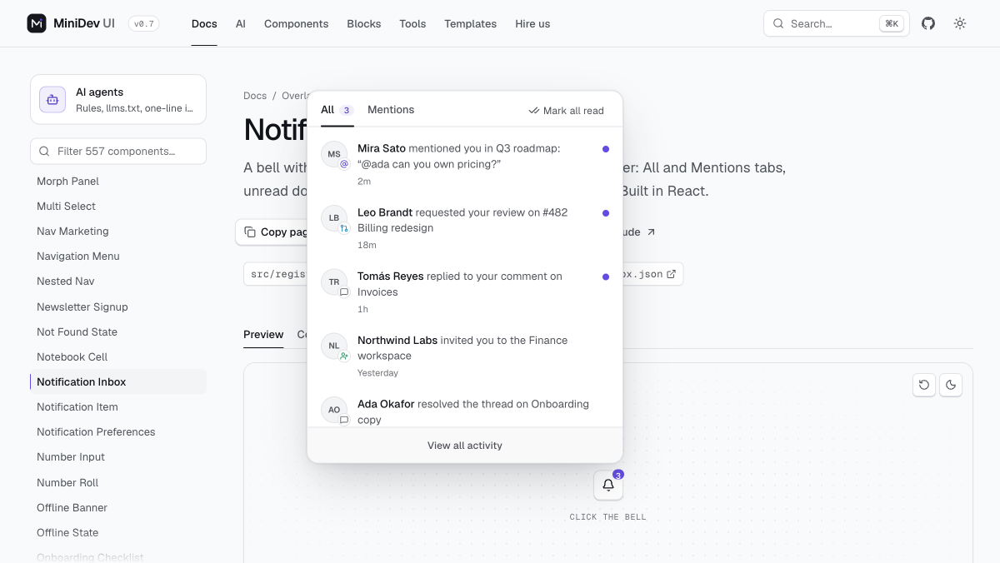
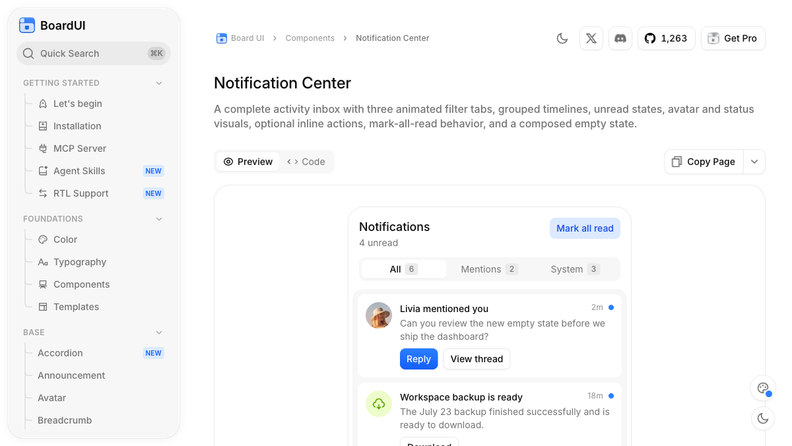

"What's the ring ring thing I can add here?"
A vague request, run through find-a-component on 24 November 2026.
Recommendation
Use the free Arc notification center. It has a bell with an unread count, a popover with All and Unread views, mark all read, clear read, and dismiss. It respects reduced motion. Its licence is MIT.
The runner-up is the MiniDev notification inbox. Pick it if you want a Mentions tab or a Base UI product. It needs MiniDev's own token stylesheet, and its tab count is 10px text, which fails the 12px floor.
1. The words, turned into a requirement
| Kind | From "the ring ring thing" |
|---|---|
| What it is | A bell button that opens a list of recent notifications |
| States | Unread count, nothing unread, empty list, a read item, an unread item |
| Behaviour | Open and close from the keyboard, mark one or all read, link out of each item |
| Names people use | Notification center, notification inbox, notifications popover, activity feed |
2. The project
This repo is a skill pack and has no product components, so this step found nothing. In a real product, step 2 searches the code for a bell or inbox first.
3. Search
find-components.js notifications notification-center notification-popover \
notification-inbox activity-feed --type any --registries 30The first search, with "bell" and "badge", returned mostly icons. The second search, with the names people use, returned 29 items. Six were read in full.
4. The three serious candidates

1. Arc, notification-center
- Licence
- MIT for the free tier, read at uiarc.dev/license
- Tier
- check-licence: free items only, Arc Pro needs a bought licence
- Adds
- @radix-ui/react-popover, lucide-react, motion
- States
- Unread, empty, read, dismissed
- Keyboard
- Radix popover: Escape and focus come from Radix
- Reduced motion
- Yes
pnpm dlx shadcn@latest add @uiarc/notification-center
2. MiniDev, notification-inbox
- Licence
- MIT, read in the repository LICENSE file
- Tier
- Not in sources.json: a new source
- Adds
- @base-ui/react, lucide-react, MiniDev token stylesheet
- States
- Unread, empty, mentions
- Keyboard
- Base UI popover, focus returns on close
- Small text
- 10px tab count
pnpm dlx shadcn@latest add @minidev/notification-inbox
3. BoardUI, notification-center
- Licence
- MIT for free source, read at boardui.com/license
- Tier
- Not in sources.json: a new source
- Adds
- @remixicon/react and five BoardUI parts
- States
- Unread, empty, grouped by day, inline actions
- Bell
- None: a panel, not a popover
- Keyboard
- No key handling found in the code
Rejected
| Item | Why |
|---|---|
| @uiable/popover-notifications | No aria attributes, no unread state, no empty state |
| uday-a/notifications-popover | No aria attributes and no key handling |
| uibrik/notification-center | Registry item is empty (81 bytes) |
| Bell and badge icons | An icon, not the component |
Not checked
None of the three was installed or rendered in a product, so token fit and the 375px width are unverified. The screenshots come from each source's own docs page. Accessibility was judged by reading the code, not with a screen reader.